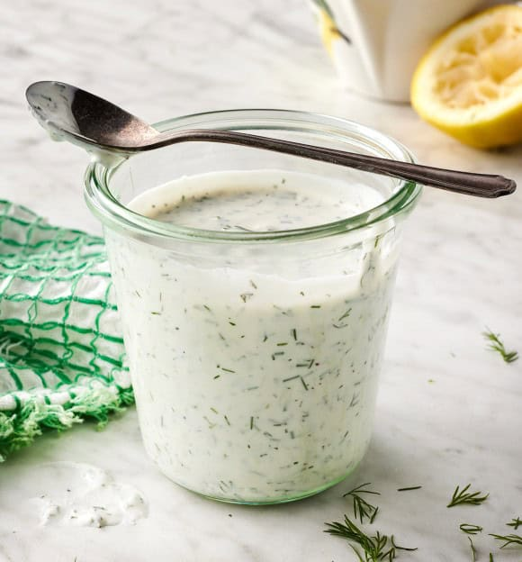

Home
Ranch

Description
Our kiddo loves this homemade ranch dressing…and honestly, I do too! It
has a delicious creamy texture and tangy, savory flavor. Keep it on the thicker
side to use as a dip with veggies, or thin it out to drizzle over salads and
pizzas (if ranch on pizza happens to be your thing).
This ranch dressing recipe calls for simple ingredients, which make it
taste SO much better than any store-bought ranch dressing I’ve tried. It has a
rich sour cream base (Greek yogurt works too!), and seasonings like dried dill
and garlic powder add bold flavor. Fresh lemon juice gives it a perfect bright
finish.
Ingredients
- ½ cup sour cream or whole milk Greek yogurt
- ¼ to ½ cup mayonnaise
- 2 to 4 tablespoons buttermilk or any milk
- 1 teaspoon dried dill
- 1 teaspoon fresh lemon juice
- 1 teaspoon distilled white vinegar
- ½ teaspoon garlic powder
- ¼ teaspoon onion powder
- ¼ to ½ teaspoon sea salt
- Freshly ground black pepper
- 1 tablespoon chopped fresh chives, optional
- 1 tablespoon chopped fresh dill, optional
Steps
- In a medium bowl, whisk together the sour cream, ¼ cup mayonnaise, 2
tablespoons milk, dried dill, lemon juice, vinegar, garlic powder, onion
powder, ¼ teaspoon salt, and several grinds of pepper. For a thicker dressing,
add more mayonnaise. For a thinner dressing, add more milk.
- Season to taste, adding more salt if desired. Fold in the chives and dill, if
using.
- Use as a salad dressing or dip, or try one of the serving suggestions in the
blog post above. Store dressing in an airtight container in the refrigerator
for up to 5 days.